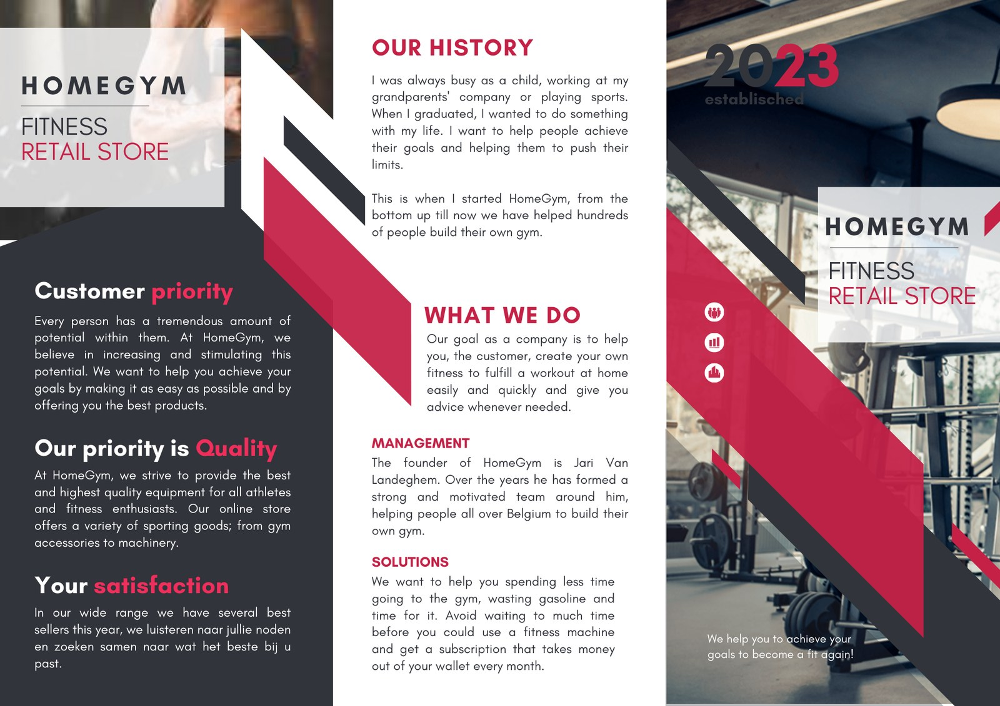
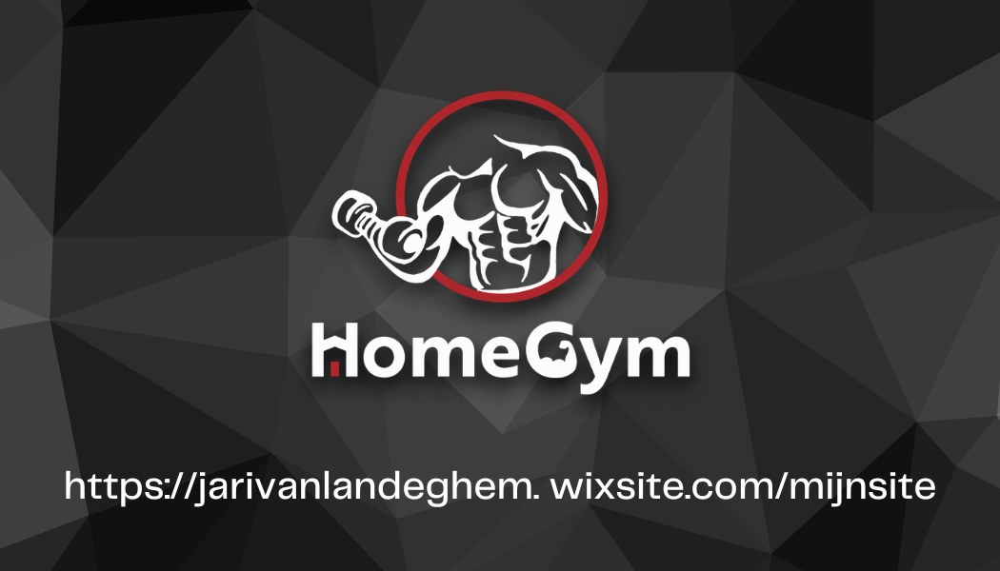
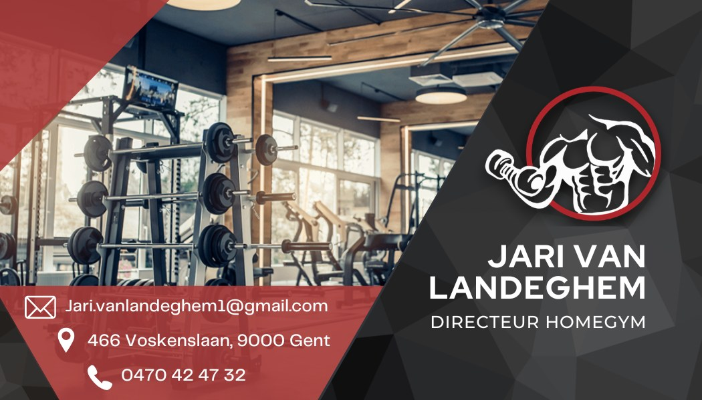
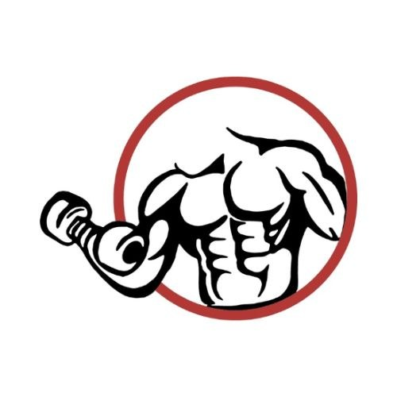

HomeGym
Fictieve onderneming · fitnesstoestellen voor thuisVoor mijn geïntegreerde proef richtte ik een eigen bedrijf op: HomeGym, een zaak die fitnesstoestellen verkoopt aan particulieren. Zo kunnen mensen thuis trainen, zonder abonnement, verplaatsing of wachten op een toestel. Ik werkte alles uit, van marktanalyse en financieel plan tot huisstijl, webshop en communicatie in vier talen.